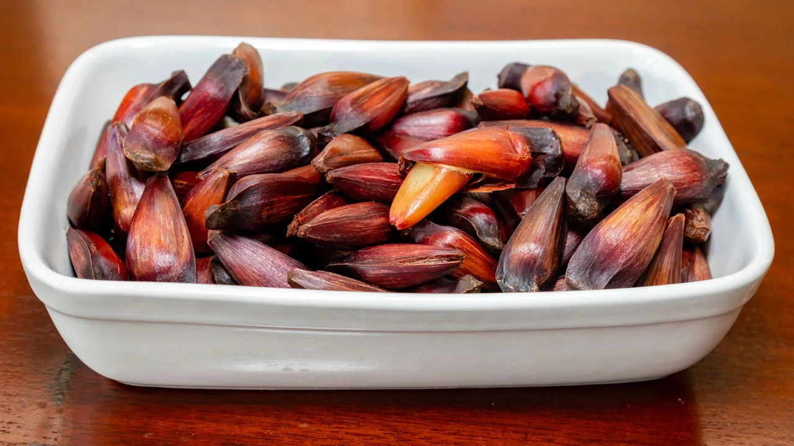

Sobre o Pinhão
O pinhão é a semente da araucária, árvore conhecida também como pinheiro-do-paraná. Essa árvore é muito importante para a natureza e para a cultura do estado do Paraná.
O pinhão é um alimento bastante tradicional e pode ser consumido cozido, assado ou utilizado em diversas receitas. Durante o outono e o inverno, ele é encontrado em feiras, mercados e festas típicas.

História do Pinhão
O pinhão já era utilizado como alimento pelos povos indígenas que viviam na região Sul do Brasil. Por ser uma importante fonte de alimento, fazia parte da alimentação dessas populações muito antes da chegada dos europeus.
Com o passar dos anos, o pinhão continuou presente nos costumes da população. No Paraná, tornou-se um alimento tradicional e passou a representar parte importante da história e da identidade cultural do estado.
Pinhão e a Cultura Paranaense
O pinhão possui grande importância na cultura do Paraná. Ele está presente na culinária, em festas tradicionais e principalmente nos costumes das regiões onde existem florestas de araucárias.
Durante o inverno, muitas famílias consomem pinhão e utilizam a semente no preparo de diferentes pratos. Entre as receitas estão o pinhão cozido, a paçoca de pinhão, farofas, bolos e outros alimentos típicos.
Além da importância cultural, o pinhão também possui valor econômico para produtores e comerciantes. Sua venda movimenta a economia em diversas cidades paranaenses durante a época da colheita.
Curiosidades
Semente da Araucária
O pinhão é a semente da Araucaria angustifolia, árvore popularmente conhecida como araucária ou pinheiro-do-paraná.
Alimento de Inverno
O pinhão é mais consumido durante o outono e o inverno, sendo um dos alimentos mais tradicionais da Região Sul.
Receitas Tradicionais
O pinhão pode ser preparado de várias formas, como cozido, assado ou utilizado em bolos, farofas e outros pratos.
Referências
Governo do Estado do Paraná. Informações sobre a cultura e a importância do pinhão no estado.
Embrapa. Informações sobre a araucária e espécies nativas da Região Sul do Brasil.
Instituto Água e Terra do Paraná. Informações sobre a preservação da araucária.